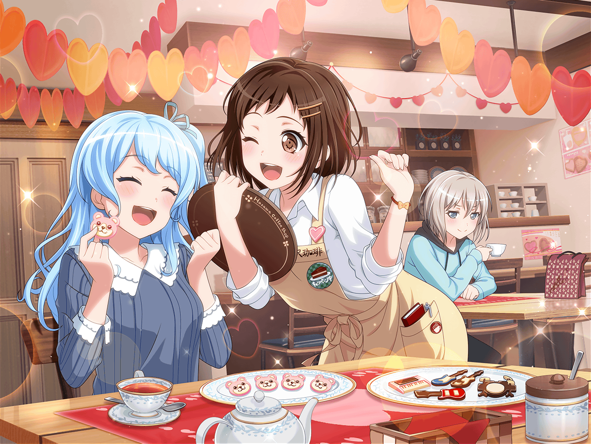
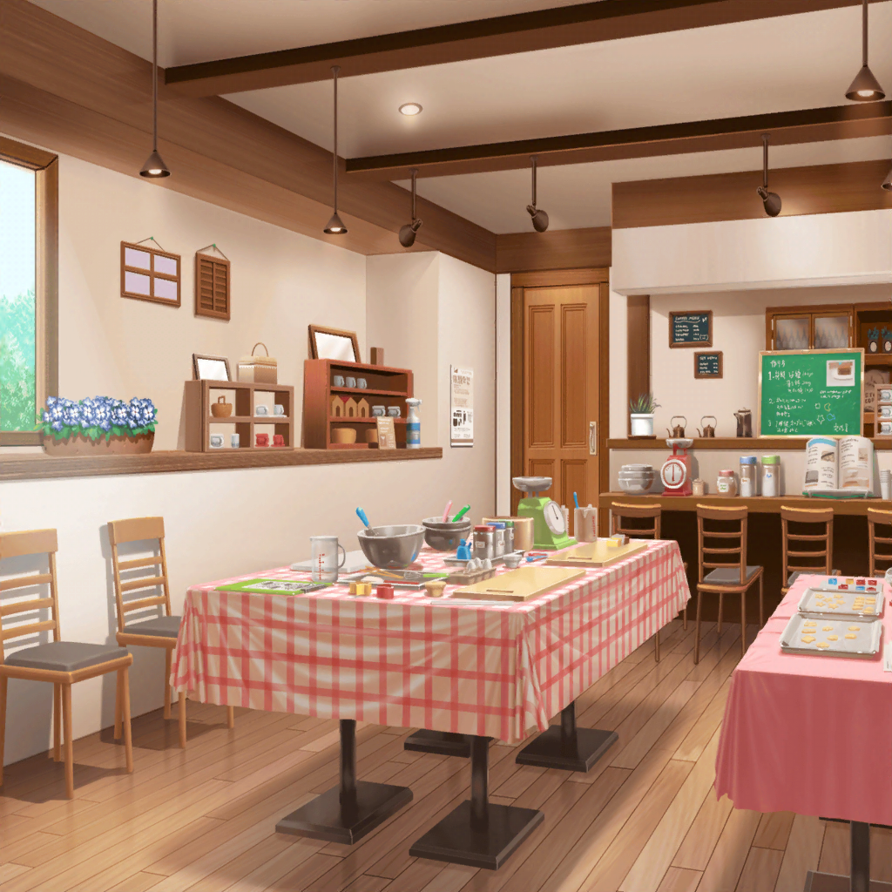
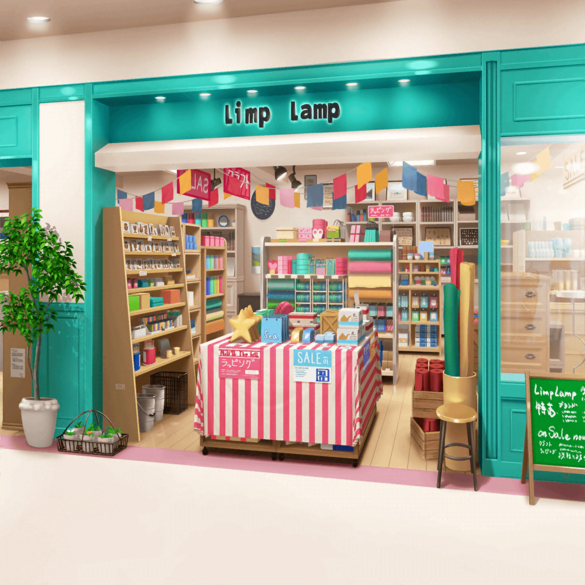

ショッピングモール
つぐみ
うーん、今年のバレンタインは、
どうしようかなぁ……
つぐみ
毎年、みんなにはチョコをあげてるし、
今年はどんなチョコを作ろうかなぁ……
つぐみ
去年はえっと……
生チョコだったよね。
それで、一昨年はガトーショコラで……
花音
ふええ……
ここ……どこ？
つぐみ
あれ？
あそこにいるのって、花音さん？
つぐみ
花音さん、こんなところでどうしたんですか？
花音
あっ、つ、つぐみちゃん……！
あの……ちょっと恥ずかしいんだけど……
実は、迷子になっちゃって……
つぐみ
迷子……このショッピングモールの中で、ですか？
花音
う、うん……
バレンタインのチョコを作るのに、
必要な材料を探しに来たんだけど……
花音
うまく食料品売り場に辿り着けなくて……
つぐみ
（食料品は地下だったと思うんだけど……
ここって、２階だよね……）
つぐみ
なるほど……
それじゃあ、一緒に周りませんか？
花音
え、い、いいの？
つぐみ
私もちょうど材料を買いに来たところですし、
花音さんがよければ、一緒に行きましょう
花音
う、うん！
そうしてくれると助かるよ〜……
つぐみ
いえ、私も花音さんと一緒の方が楽しいですから！
花音
つぐみちゃん、ありがとう〜……
つぐみ
食料品売り場は地下１階ですから、こっちですよ。
私が案内しますね
花音
うん！ つぐみちゃんに、ついていくね
つぐみ
ちなみにですけど、花音さんがチョコを贈る相手って、
やっぱりハロハピのみなさんですか？
花音
うん、そうだよ。
つぐみちゃんもバンドのメンバーに贈るの？
つぐみ
はい。
メンバーには、一応毎年チョコを贈ってるんですけど、
今年はどんなチョコにしようか、まだ悩んでて……
花音
確かに、毎年となると、悩んじゃうよね……
つぐみ
花音さんは、どんなチョコを贈るか決まってますか？
花音
えっと、私は……
ミッシェルの形のチョコに、しようかなって思ってるよ
つぐみ
え？ ミッシェルですか！？
花音
う、うん……
つぐみ
だけど、どうやってミッシェルの形に？
花音
えっと、それはクマの形の型に入れて成型しようと思ってるの。
最後にホワイトチョコでデコレーションすれば、
たぶんミッシェルみたいにできそうだから
つぐみ
なるほど！
それすっごくかわいいと思います！
花音
みんなミッシェルが大好きだから、
喜んでくれるかなって思って……
つぐみ
喜びますよ！
絶対に喜びます！
つぐみ
……あ、そっか！
花音
どうしたの、つぐみちゃん？
つぐみ
みんなが好きな物の形にするって、すごくいいですね！

つぐみ
（前に、紗夜さんと一緒にクッキー作りをした時、
相手に喜んでもらえるような形にしてたよね……？）

つぐみ
（あの時、確か紗夜さん……
すごく喜んでもらったって言ってたし……）
つぐみ
わ、私も、花音さんみたいに、みんなが好きなものを
チョコで作ってみようかな……っ！
花音
うん！
いいと思うよ！
つぐみ
それじゃあ、私が作るチョコは……
ギターとベースとドラム、あとはマイクの形……
花音
ふふ……
Afterglowのみんなは、
自分のパートの楽器が本当に好きなんだね
つぐみ
あ！
キーボードの形のチョコも作らないと……
花音
え？
キーボードはつぐみちゃんの楽器でしょ？
自分用にもチョコを作るの？
つぐみ
あー、そうじゃなくて……
つぐみ
みんなが好きなものって……
Afterglowですから。
やっぱりキーボードもないとって思って……
花音
そっか！
それは絶対に、みんな喜んでくれるよ……！
つぐみ
チョコができたら、
バレンタインの前に試食会をしませんか？
花音
う、うん！ やろう！
つぐみ
では、材料を買いに行きましょう！